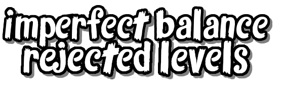
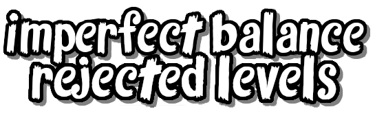
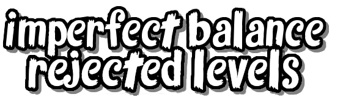

|
| Rejected Trials is Ender's eleventh mod ! It is based on Unused Levels found in old documents that Ville and Jyri made and is the 1st Imperfect Balance mod ! |  |
  |
|

|
| Rejected Trials is Ender's eleventh mod ! It is based on Unused Levels found in old documents that Ville and Jyri made and is the 1st Imperfect Balance mod ! | |
| |